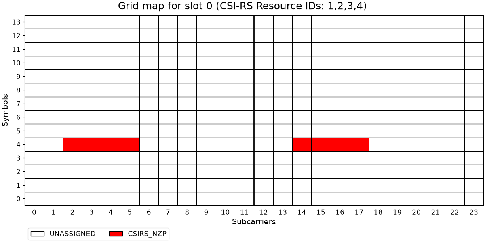

CSI-RS Configuration for Beam Management
This notebook demonstrates how NeoRadium can be used to configure and visualize CSI-RS resources for 5G NR beam-management procedures.
The example uses a multi-antenna CDL channel and the CsiRsConfig.beamformingConfig utility to create a set of CSI-RS resources representative of a practical beamforming workflow. These resources are organized into multiple CSI-RS resource sets that support different stages of beam management:
Periodic beam sweeping, used to identify candidate transmission beams.
Aperiodic beam probing, used to refine beam selection around the best sweeping beam.
Semi-persistent CSI feedback measurements, used for PMI, RI, and CQI reporting.
The notebook first creates and examines the CSI-RS configuration generated by beamformingConfig. It then visualizes how the different CSI-RS resource sets are scheduled over time, illustrating the interaction between periodic, aperiodic, and semi-persistent CSI-RS transmissions.
By following the examples and animations, you can see how CSI-RS resources are distributed across slots and how NeoRadium models CSI-RS signaling for beam sweeping, beam refinement, and CSI feedback in a beam-management scenario.
[1]:
import numpy as np
import scipy.io
import matplotlib.animation as animation
import matplotlib.pyplot as plt
from IPython.display import HTML, Markdown, display
from neoradium import BandwidthPart, CsiRsConfig, CdlChannel, AntennaPanel
[2]:
# Create a 'BandwidthPart' and a CDL-C channel object:
bwp = BandwidthPart(numRbs=52, spacing=15)
channel = CdlChannel(bwp, profile='C', delaySpread=30, carrierFreq=4e9, dopplerShift=5,
txAntenna=AntennaPanel([1,4], polarization='x', beamWidth=[65,65]),
rxAntenna=AntennaPanel([1,2], polarization='x', beamWidth=[65,360]),
rxOrientation = [180,0,0])
print(channel)
CDL-C Channel Properties:
carrierFreq: 4 GHz
normalizeGains: True
normalizeOutput: True
txDir: Downlink
filterLen: 16 samples
delayQuantSize: 64
stopBandAtten: 80 dB
dopplerShift: 5 Hz
coherenceTime: 84.628 milliseconds
delaySpread: 30 ns
ueDirAZ: 0°, 90°
xPolPower: 7.00 dB
angleSpreads: 2° 15° 3° 7°
TX Antenna:
Total Elements: 8
spacing: 0.5𝜆, 0.5𝜆
shape: 1 rows x 4 columns
polarization: x
RX Antenna:
Total Elements: 4
spacing: 0.5𝜆, 0.5𝜆
shape: 1 rows x 2 columns
polarization: x
Orientation (𝛼,𝛃,𝛄): 180° 0° 0°
hasLOS: False
NLOS Paths (24):
Delays (ns): 0.000 6.297 6.657 6.987 6.528 19.09 19.34 19.68 19.75 23.80 24.63 28.00
36.85 39.24 65.11 81.31 127.7 138.0 164.7 168.2 189.1 199.1 211.2 259.5
Powers (dB): -4.40 -1.20 -3.50 -5.20 -2.50 0.000 -2.20 -3.90 -7.40 -7.10 -10.7 -11.1
-5.10 -6.80 -8.70 -13.2 -13.9 -13.9 -15.8 -17.1 -16.0 -15.7 -21.6 -22.8
AODs (Deg): -47 -23 -23 -23 -41 0 0 0 73 -64 80 -97
-55 -64 -78 103 99 89 -102 92 93 107 120 -124
AOAs (Deg): -101 120 120 120 -128 170 170 170 55 66 -48 47
68 -69 82 31 -16 4 -14 10 6 1 -22 34
ZODs (Deg): 97 99 99 99 101 99 99 99 105 95 106 94
104 104 93 104 95 93 92 107 93 93 105 108
ZOAs (Deg): 88 72 72 72 70 75 75 75 67 64 71 60
91 60 61 101 62 67 53 62 52 62 58 57
Using beamformingConfig
The utility class method beamformingConfig creates a CsiRsConfig object suitable for typical FR1 beamforming experiments. It creates three CSI-RS resource sets:
A periodic sweeping set of 1-port resources used to obtain a coarse CRI.
An aperiodic probing set of 1-port resources used to refine the CRI around the best sweep beam.
A semi-persistent multi-port set used to measure PMI, RI, and CQI.
Sweeping and probing CSI-RS are transmitted on OFDM symbol 4, while the PMI CSI-RS is sent on OFDM symbol 6. Up to four 1-port CSI-RS resources are packed into a slot.
Notes:
This method uses a simple static beam sweeping/probing approach. In practice, adaptive beam sweeping can be used by incorporating the previously selected probing beam into the subsequent sweeping set and centering future sweeps around it. This approach resembles a wider beam probing around the current best beam, including a few wider beams to detect beam drift and prevent getting stuck in a local maximum.
The beamformingReports class method may be used to create a
CsiReportManobject containing CSI report information corresponding to the CSI-RS resources created bybeamformingConfig.
For more details, refer to the documentation of beamformingConfig.
[3]:
csiRsConfig = CsiRsConfig.beamformingConfig(bwp, channel.txAntenna.numPorts, sweepsPerSlot=4)
print(csiRsConfig)
CSI-RS Configuration: (3 Resource Sets)
CSI-RS Resource Set 1:(8 NZP resources)
Resource Set ID: 1
Resource Type: periodic
Resource Blocks: 52 RBs starting at 0
Slot Period: 20
Num CSI-RS: 8
CSI-RS 1:
resourceId: 1
numPorts: 1
cdmSize: 1 (noCDM)
density: 1
RE Indices: 2
Symbol Indices: 4
Table Row: 2
Slot Offset: 0
Power: 0 dB
scramblingID: 0
CSI-RS 2:
resourceId: 2
numPorts: 1
cdmSize: 1 (noCDM)
density: 1
RE Indices: 3
Symbol Indices: 4
Table Row: 2
Slot Offset: 0
Power: 0 dB
scramblingID: 0
CSI-RS 3:
resourceId: 3
numPorts: 1
cdmSize: 1 (noCDM)
density: 1
RE Indices: 4
Symbol Indices: 4
Table Row: 2
Slot Offset: 0
Power: 0 dB
scramblingID: 0
CSI-RS 4:
resourceId: 4
numPorts: 1
cdmSize: 1 (noCDM)
density: 1
RE Indices: 5
Symbol Indices: 4
Table Row: 2
Slot Offset: 0
Power: 0 dB
scramblingID: 0
CSI-RS 5:
resourceId: 5
numPorts: 1
cdmSize: 1 (noCDM)
density: 1
RE Indices: 2
Symbol Indices: 4
Table Row: 2
Slot Offset: 1
Power: 0 dB
scramblingID: 0
CSI-RS 6:
resourceId: 6
numPorts: 1
cdmSize: 1 (noCDM)
density: 1
RE Indices: 3
Symbol Indices: 4
Table Row: 2
Slot Offset: 1
Power: 0 dB
scramblingID: 0
CSI-RS 7:
resourceId: 7
numPorts: 1
cdmSize: 1 (noCDM)
density: 1
RE Indices: 4
Symbol Indices: 4
Table Row: 2
Slot Offset: 1
Power: 0 dB
scramblingID: 0
CSI-RS 8:
resourceId: 8
numPorts: 1
cdmSize: 1 (noCDM)
density: 1
RE Indices: 5
Symbol Indices: 4
Table Row: 2
Slot Offset: 1
Power: 0 dB
scramblingID: 0
CSI-RS Resource Set 2:(4 NZP resources)
Resource Set ID: 2
Resource Type: aperiodic
Resource Blocks: 52 RBs starting at 0
active: False
Num CSI-RS: 4
CSI-RS 9:
resourceId: 9
numPorts: 1
cdmSize: 1 (noCDM)
density: 1
RE Indices: 2
Symbol Indices: 4
Table Row: 2
Power: 0 dB
scramblingID: 0
CSI-RS 10:
resourceId: 10
numPorts: 1
cdmSize: 1 (noCDM)
density: 1
RE Indices: 3
Symbol Indices: 4
Table Row: 2
Power: 0 dB
scramblingID: 0
CSI-RS 11:
resourceId: 11
numPorts: 1
cdmSize: 1 (noCDM)
density: 1
RE Indices: 4
Symbol Indices: 4
Table Row: 2
Power: 0 dB
scramblingID: 0
CSI-RS 12:
resourceId: 12
numPorts: 1
cdmSize: 1 (noCDM)
density: 1
RE Indices: 5
Symbol Indices: 4
Table Row: 2
Power: 0 dB
scramblingID: 0
CSI-RS Resource Set 3:(1 NZP resources)
Resource Set ID: 3
Resource Type: semiPersistent
Resource Blocks: 52 RBs starting at 0
Slot Period: 10
active: False
Num CSI-RS: 1
CSI-RS 13:
resourceId: 13
numPorts: 8
cdmSize: 2 (fd-CDM2)
density: 1
RE Indices: 6 8
Symbol Indices: 5
Table Row: 7
Slot Offset: 0
Power: 0 dB
scramblingID: 0
Timing Aspects of CSI-RS Resources
The following code illustrates CSI-RS resources on a grid map for the first 40 slots of communication. As the animation runs, observe the following:
CSI-RS for sweeping beams is transmitted every 20 slots. The first four beams are sent at slots 0 and 20, while the next four beams are transmitted on slots 1 and 21.
CSI-RS for beam probing is aperiodic. In the following code, they are triggered on slots
[5, 15, 27, 32](hard-coded for this example).The CSI-RS resource set for CSI feedback (e.g., PMI, RI, CQI) is semi-persistent. It is activated at slot 18. With a period of 10, it appears on slots 20 and 30.
[4]:
csiRsConfig[2].active=False
txGrid = bwp.createGrid(csiRsConfig.numPorts)
csiRsConfig.populateGrid(txGrid)
stats = txGrid.getStats()
rsIdStrs = [ key.split("(")[1][:-1] for key,val in stats.items() if "CSIRS_NZP" in key ]
axes = txGrid.drawMap(rbRange=(0,1),
title=f"Grid map for slot {0} with CSI-RS Resource IDs: {",".join(rsIdStrs)}")
# Callback function to update the grid map
def updateMap(frame):
axes[0].clear()
bwp.slotNo = frame
if bwp.slotNo in [5, 15, 27, 32]: csiRsConfig[1].trigger()
if bwp.slotNo == 18: csiRsConfig[2].active=True
txGrid = bwp.createGrid(csiRsConfig.numPorts)
csiRsConfig.populateGrid(txGrid)
stats = txGrid.getStats()
rsIdStrs = [ key.split("(")[1][:-1] for key,val in stats.items() if "CSIRS_NZP" in key ]
title = f"Grid map for slot {frame} ({'No CSI-RS resources' if len(rsIdStrs)==0 else ('CSI-RS Resource IDs: '+",".join(rsIdStrs))})"
txGrid.drawMap(rbRange=(0,1), title=title, axes=axes)
return ()
# Create the animation
fig = axes[0].get_figure()
anim = animation.FuncAnimation(fig, updateMap, frames=40, interval=1000, blit=False, repeat=True)
plt.close(fig) # Prevent duplicate static plots
anim.save("CsiRsBeams.gif", writer=animation.PillowWriter(1)) # Show one frames per second
display(Markdown(""))
# Another option is to use the following command which gives you more controls for running
# the animation.
# HTML(anim.to_jshtml())

[ ]:
[ ]: